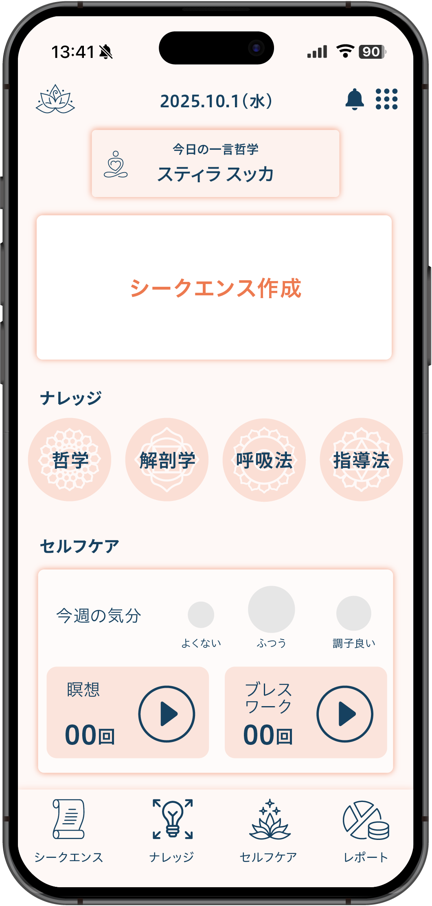
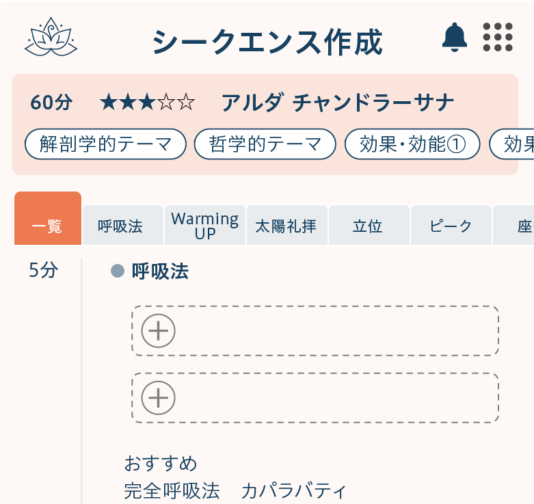
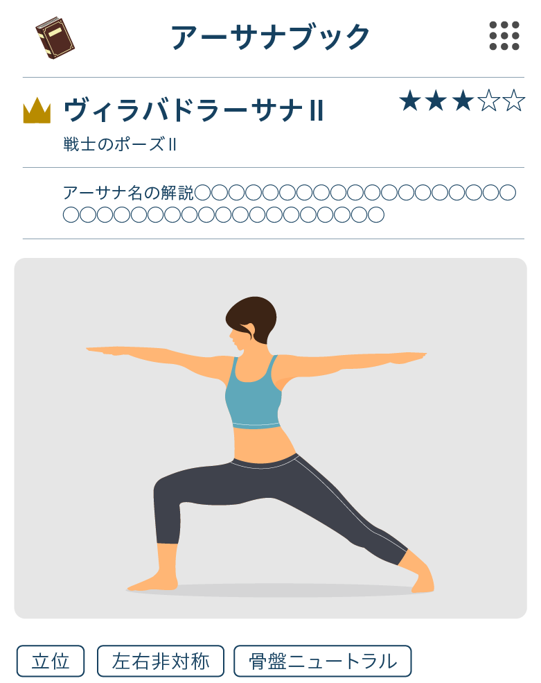
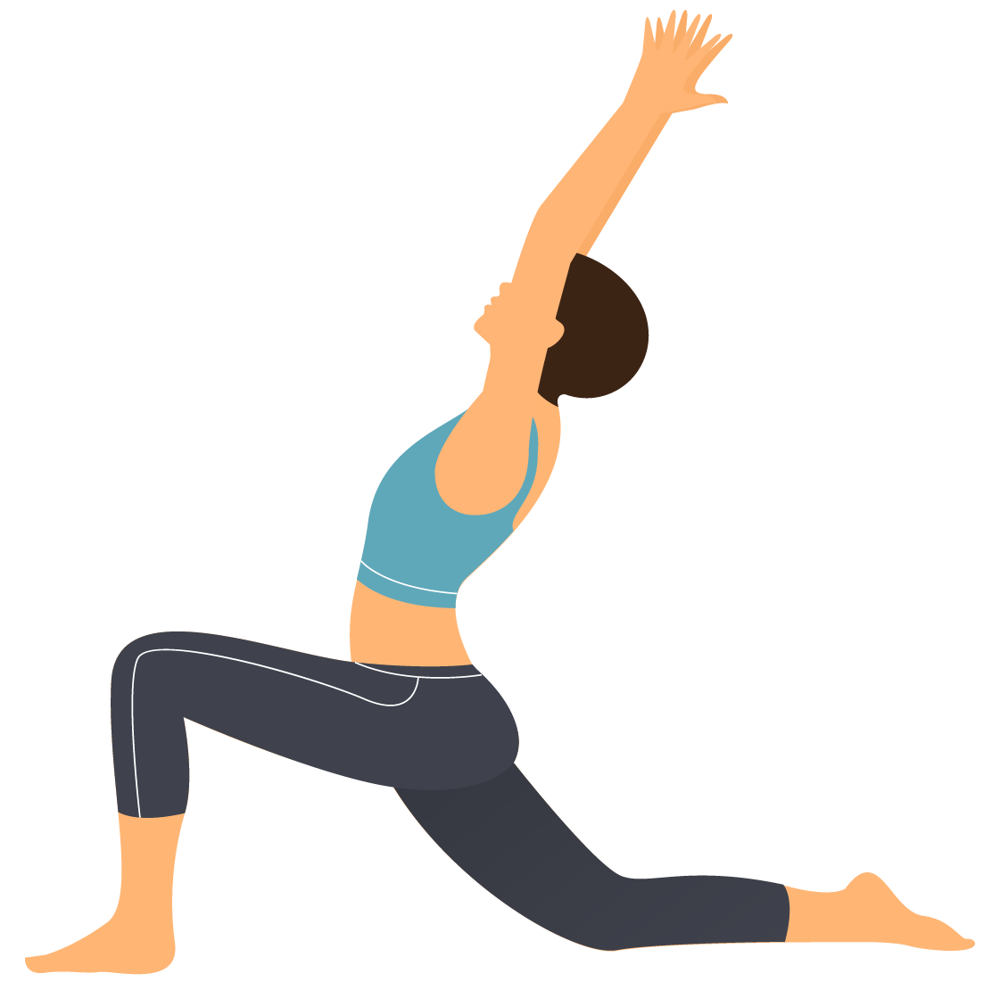

自信が育つ
積み重ねが見えることで、自分の歩みを実感しやすくなります。




ヨガインストラクターの日常に必要な「学びの整理」「セルフケアの継続」「積み重ねの確認」をひとつの流れで支えるアプリです。
ノートやメモアプリに散らばりがちな情報をまとめることで、必要なときにすぐ振り返れる状態をつくります。
さらに、短いセルフケアのきっかけや実践記録を通じて、自分の状態と向き合う時間も自然に取り入れやすくなります。
学びや体調、セルフケアの記録が、少しずつ指導と自信につながっていきます。
積み重ねが見えることで、自分の歩みを実感しやすくなります。
自分の状態に気づきやすくなり、無理を重ねにくくなります。
記録と振り返りが整い、自分のペースで続けやすくなります。
Stikaを使うことで、学びや練習が「なんとなく頑張っているもの」ではなく、きちんと積み重なっている実感に変わっていきます。必要な記録がまとまることで準備や振り返りがしやすくなり、自分の状態にも目を向けやすくなります。すると、忙しい日々の中でも焦りにくくなり、「これでいいのかな」という不安が少しずつ「続けていけそう」という安心感へ変わっていきます。
レッスン準備を支える機能を中心に、学びの管理からセルフケア、振り返りまでをひとつにまとめています。
特別に時間を確保しなくても、日常の中で続けやすい設計です。
短いセルフケアを日々の記録でスタート
移動や休憩の隙間時間に学習メモを確認
レッスンの体験を振り返って記録する
週末1週間の記録をまとめて確認
頑張っているのに整わない感覚は、あなただけのものではありません。
続けたい気持ちがあっても、日々の忙しさの中では難しいことがあります。
学習・ケア・振り返りを同時に進め、ひとつの流れで支えます。
Stikaの特徴は、ヨガインストラクター自身を支えることを出発点にしていることです。
一般的な記録アプリや学習アプリは、どれか一つの用途に強みがある一方で、日々の学び、セルフケア、成長実感をまとめて支える設計にはなりにくい面があります。Stikaは、日本語で使いやすく、国内のヨガインストラクターが取り入れやすい形で、教える人の毎日に必要な要素をひとつに整えています。
まず試したい方にも、長く使いたい方にも選びやすい形を用意しています。
法人導入は別途ご案内します。また、お支払いはクレジット払いのみとなります。
まずは気軽に始めたい方へ
継続活用を前提に選びたい方へ
＼ 1,960円（2か月分）お得 ／
¥980
(税込) / 月
月額プランで申し込む¥9,800
(税込) / 年
年額プランで申し込む利用方法やプランの疑問を、はじめての方にもわかりやすくまとめています。
・資格取得後も学びを続けたいヨガインストラクター
・レッスン準備と自己管理の両立に悩んでいる方
等
に向いています。
記録が分散しやすい方や、自分のためのケア時間を取り入れたい方にも使いやすい設計です。
はい、スマホだけでもご利用いただける想定です。
移動中や休憩時間、レッスン後などのすき間時間にも記録しやすく、日常の流れの中で無理なく取り入れやすい使い方を想定しています。
記録が分散しやすい方や、自分のためのケア時間を取り入れたい方にも使いやすい設計です。
どちらも基本的な利用機能は共通で、主な違いはお支払い方法と利用スタイルです。
まずは気軽に始めたい場合は月額、継続前提で使いたい場合は年額が選びやすく、LP内で選んだ内容は申込フォームに引き継がれます。
はい、月額プランは利用状況に応じて見直しやすい形を想定しています。年額プランを含む詳細な契約条件については、お申し込み時に確認できるよう案内を表示し、わかりにくさが出ないようにしています。
はい、スタジオやスクールなどでの導入を検討される法人向けの案内も用意しています。
個人向け申込とは別導線となっており、導入規模や活用方法に応じて相談しやすい形でご案内します。